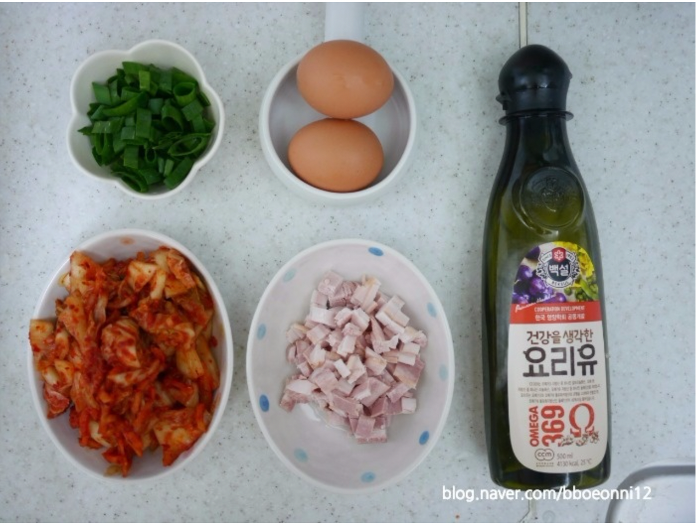
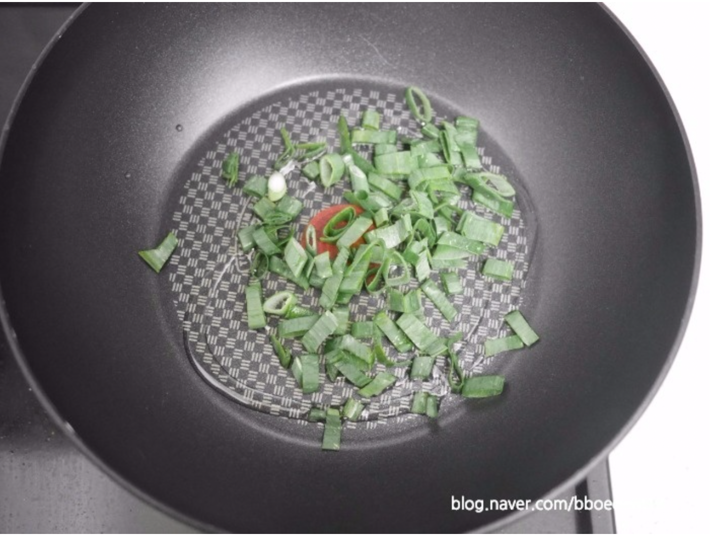
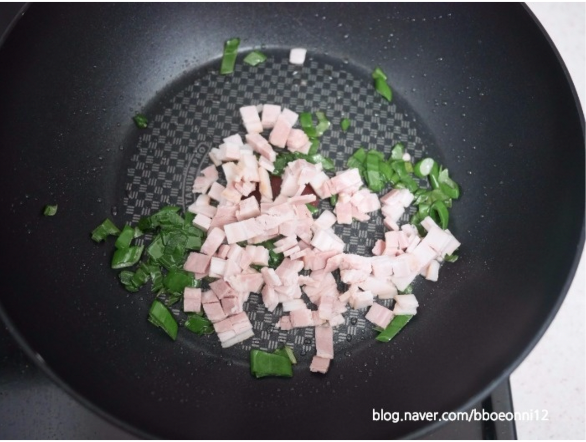
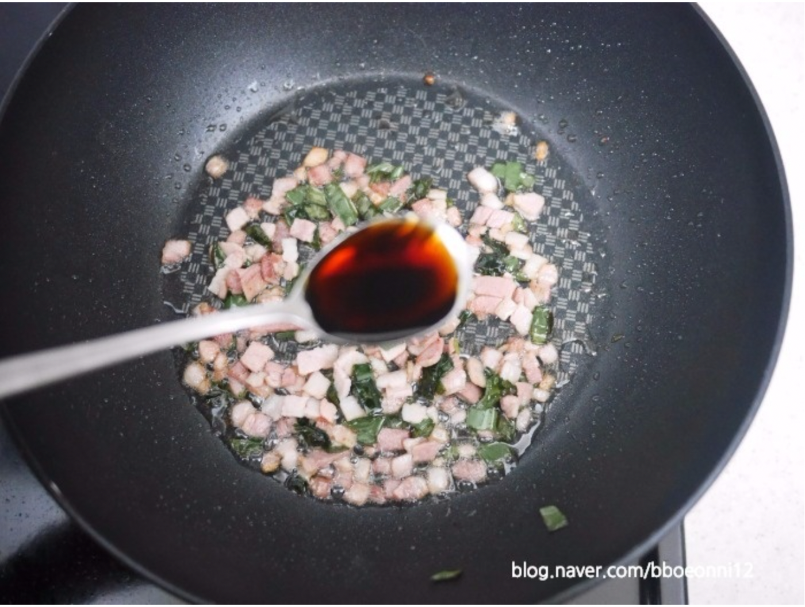
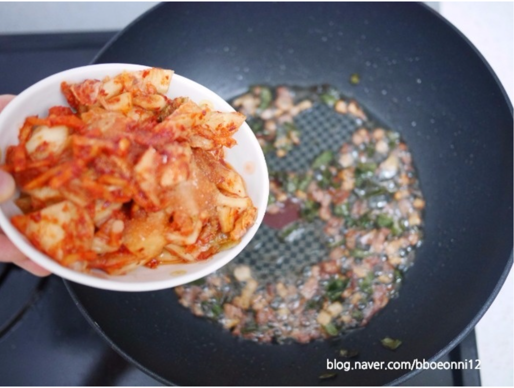
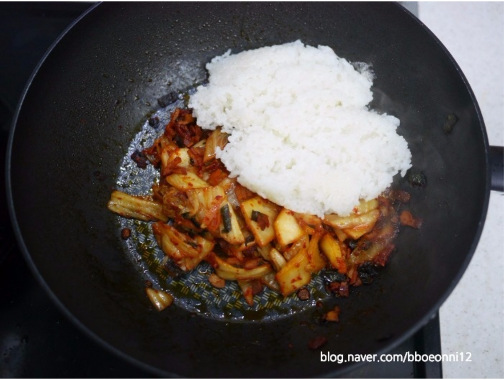
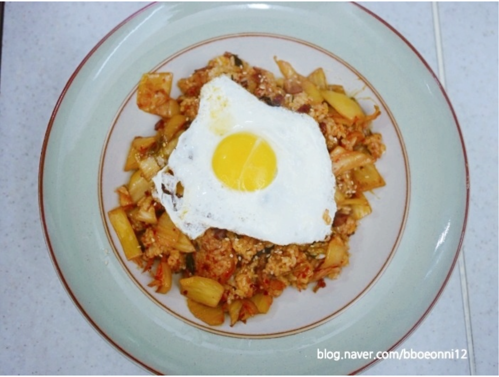

어느새 추운 바람은 물러가고 선선한 바람과 기분 좋은 햇살을 만끽하는 봄이 왔어요.
저는 간단한 짐과 도시락만 가지고 당장이라도 놀러가고 싶은 날씨랍니다. 그래서 준비했어요.
오늘 레시피는 언제 먹어도 맛있는 김치볶음밥을 만들어볼 거에요.
사실 김치에 밥만 볶아도 맛있는 김치볶음밥을 더 맛있게 먹어보아요! 그럼 함께 만들어볼까요?
[주재료]
김치 - 국그릇 가득, 대파 - 조금, 베이컨 - 3장, 달걀 - 2개, 간장 - 1스푼,
식용유 - 조금
1. 김치볶음밥 센불만 기억하면 끝~! 이제 시작해볼게요!

2. 재료를 준비합니다.

3. 팬에 올리브유를 넉넉하게 부은 다음 센 불에 대파를 볶아주세요.

4. 대파향이 올라오면 센 불에 베이컨을 볶아주세요.

5. 간장 한 스푼을 넣고 베이컨이 노릇해 질 때까지 볶아주세요.

6. 김치를 넣고 볶아주세요.

7. 마지막으로 밥을 넣고 볶아주세요

8. 계란후라이 1개를 해서 올려 먹으면 더 맛있습니다~!
1. 김치볶음밥 센불만 기억하면 끝~! 이제 시작해볼게요!
2. 재료를 준비합니다.
3. 팬에 올리브유를 넉넉하게 부은 다음 센 불에 대파를 볶아주세요.
4. 대파향이 올라오면 센 불에 베이컨을 볶아주세요.
5. 간장 한 스푼을 넣고 베이컨이 노릇해 질 때까지 볶아주세요.
6. 김치를 넣고 볶아주세요.
7. 마지막으로 밥을 넣고 볶아주세요
8. 계란후라이 1개를 해서 올려 먹으면 더 맛있습니다~!
위 레시피에 나온 제품을 구매하시려면 지민e샵을 방문하세요~